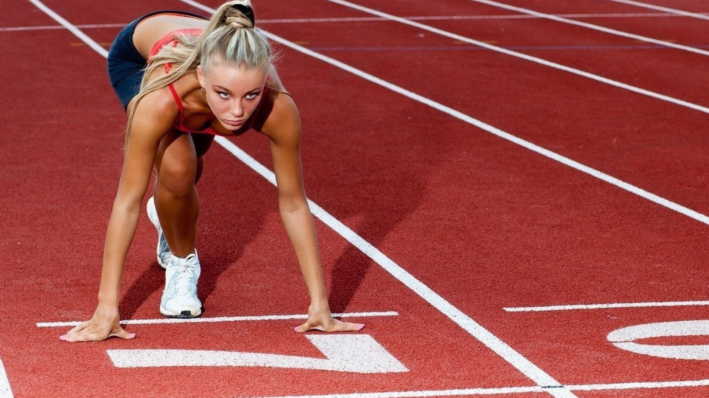
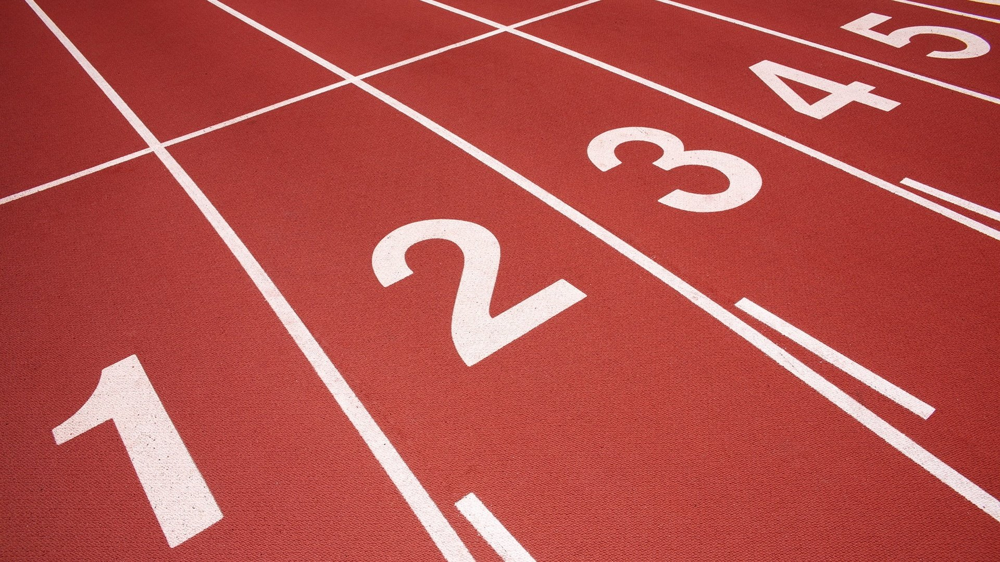
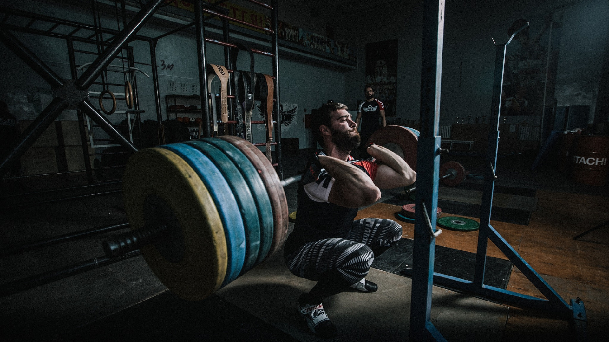
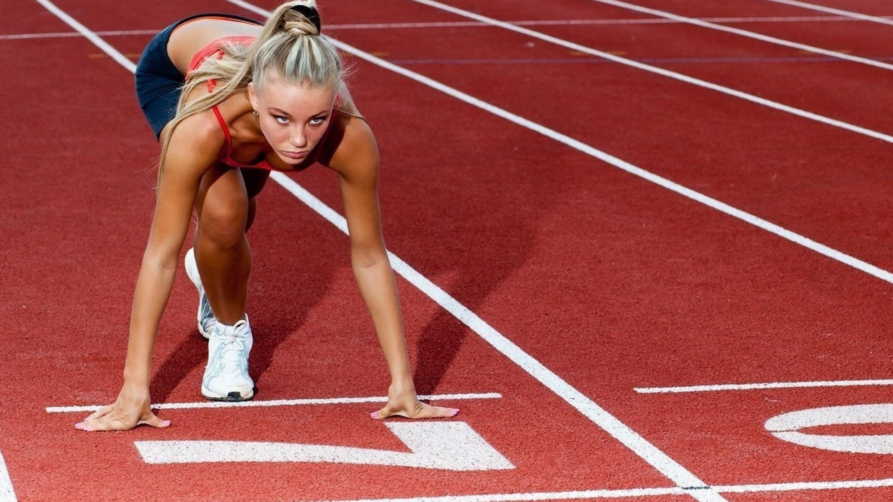
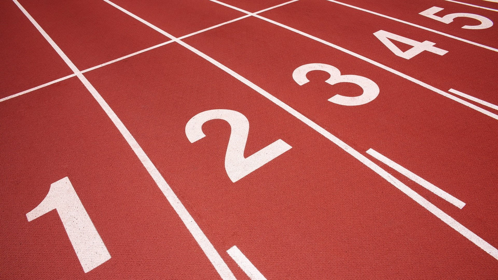
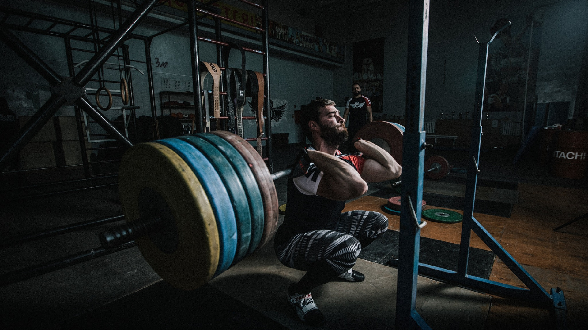
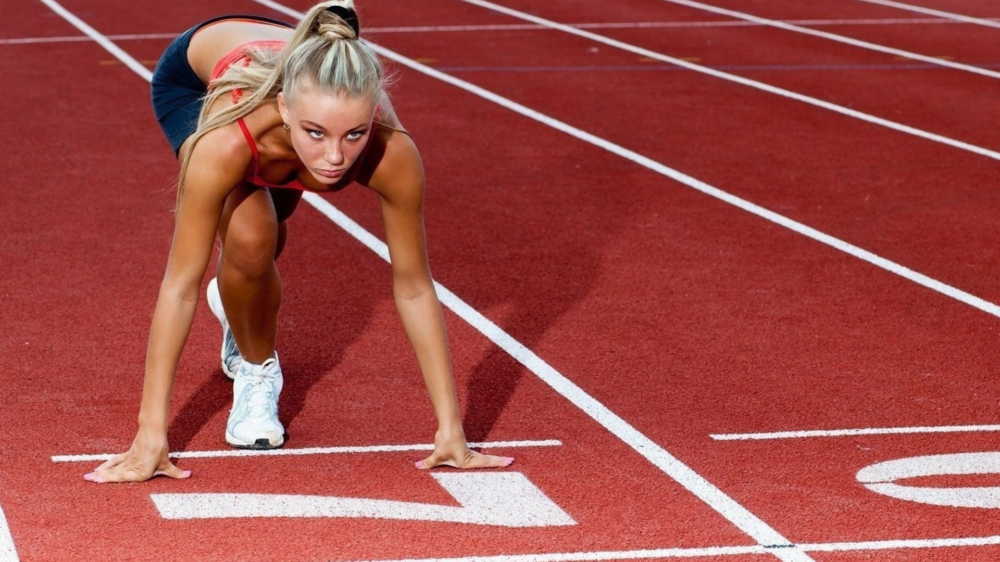
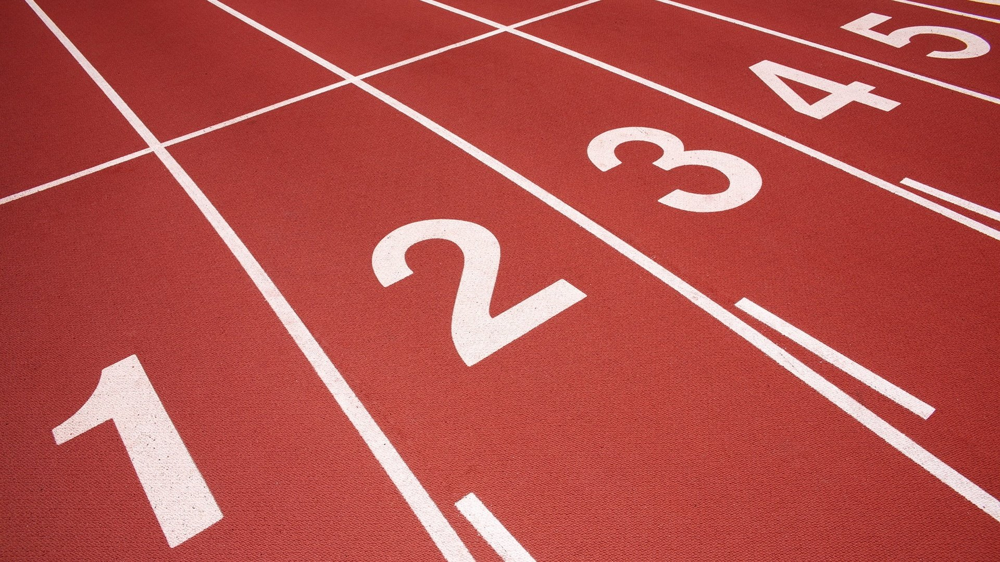
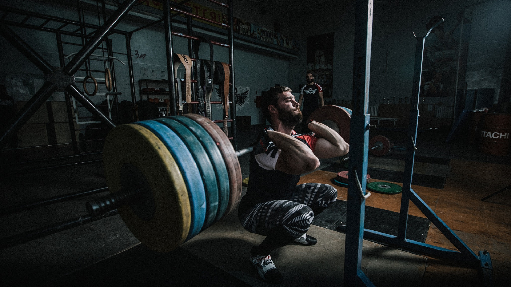

⬆



Важка атлетика — силовий вид спорту у сучасних Олімпійських іграх, у якому атлет намагається підняти якомога важчу штангу (складається з грифу та важкоатлетичних дисків різної ваги). У сучасних Олімпійських іграх змагання з важкої атлетики поділяються на дві вправи — ривок, а також поштовх.
магання з підняття ваги зустрічаються в культурі народів з давніх часів. Найранішні згадки подібних змагань відносяться до Стародавнього Єгипту, Стародавнього Китаю та Стародавньої Греції. У сучасному вигляді цей спорт оформився в XIX столітті. Перші офіційні змагання почалися в 1860-і роки в США, потім в 1870-ті стали проводитися в Європі. Перший міжнародний чемпіонат пройшов в 1891 році у Великій Британії, а офіційний чемпіонат світу відбувся в 1898 році у Відні. Всесвітній важкоатлетичний союз утворений в 1912 році. В цей же час стандартизують правила змагань.
В програмі Олімпійських ігор з 1896 року (крім 1900, 1908, 1912). Програма змагань та вагові категорії спортсменів постійно змінювалися. До створення Міжнародної федерації важкоатлетів (ФІХ) атлети змагалися в ривку і поштовху двома руками, іноді — в ривку і поштовху однією рукою;